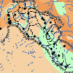

В. А. Белявский. Вавилон легендарный и Вавилон исторический
|  | Карта.Война Вавилонии за независимость в 627≈605 гг. до н.э. (73 KB) |
Помещенная здесь книга является, пожалуй, первой и на долгие годы единственной в мировой литературе о Вавилоне эпохи Навуходоносора.
| Фото В. А. Белявского (1924≈1977), из группового снимка кафедры истории Древней Греции и Рима ЛГУ им. А. А. Жданова (1957). Здесь он студент последнего курса. | |
| Фото В. А. Белявского в 1970 г. |
Звезда первой величины в советской ассириологии Виталий Александрович Белявский (1924≈1977), так же как и его старший товарищ Л. Н. Гумилев, был защитником Родины. В возрасте 21 года, в составе одного из армейских подразделений 3-го Белорусского фронта, Белявский стал участником Восточно-Прусской стратегической операции (январь≈апрель 1945 г.) и был награжден боевыми наградами, ≈ орденом Красной Звезды, орденом ╚Славы╩ III-ей степени, высшей медалью СССР ╚За отвагу╩, медалями ╚За взятие Кëнигсберга╩. В 1953 г. В. А. Белявский демобилизовался из рядов Советской Армии, а в 1954 г. поступил на Исторический факультет Ленинградского Государственного университета. Он с отличием закончил обучение на кафедре истории Древней Греции и Рима и получил специальность ╚историк-античник╩, одновременно этот курс закончил Юрий Викторович Андреев (1937≈1998). Но его влекла другая, более древняя история ≈ история Ассирии и Вавилона и он считал, что . После окончания учебы в 1959 г. он поступил в аспирантуру на ассириологическое отделение, а его научным руководителем и учителем стал известнейшей советский историк В. В. Струве (1889≈1965).
Однако история, экономика и язык Шумера прочно вошли в круг научных интересов и личных амбиций бывшего студента академика Струве, языковеда и к. и. н. Игоря Михайловича Дьяконова (1915≈1999). Между Струве и Дьяконовым развернулась научная полемика. Существенные разногласия во взглядах на устройство политической и экономической жизни древней Месопотамии смогли расколоть научную среду. Желание утвердить свою единственную точку зрения на причины падения древнего Царства привело к подавлению иномыслия и смогло изменить судьбы многих советских ученых-востоковедов. Виталий Александрович имел свою точку зрения, равно далекую от взглядов лидеров обеих лагерей, но все же он оказался в острой вражде с М. К. Дандамаевым (1928 г. р.), подчиненным Дьяконова. Защита кандидатской диссертации Белявского на тему ╚╚Образование Ново-Вавилонского царства╩ не состоялась ни в Ленинграде, ни в Москве. Уже немолодой Виталий Александрович был отстранен всесильным Дьяконовым (главным редактором многих исторических журналов) от возможности печататься в СССР по востоковедческой тематике и стал неформальным ученым. Занимался он днем (переводил древние манускрипты, составлял картотеки и др.), а ночью его экологической нишей стала работа сторожем на Радиотехническом приборостроительном заводе им. Н. Г. Козицкого. (Его позицию по этому вопросу можно понять из его переписки).
Начало отношений Белявского с Львом Гумилевым положила статья Виталия Александровича, которая попала на рецензию к Гумилеву. Ученые подружились. Когда Л. Н. Гумилев был председателем секции этнографии Географического общества СССР, он привлек его к совместной работе. Белявский стал выступать с докладами в ГО. Также он продолжал активную научную деятельность, но публиковался преимущественно за рубежом в авторитетных исторических изданиях. Они навещали друг друга на дому и в домашней атмосфере продолжали обсуждать свои научные исследования. Когда же тучи сгустились над Л. Н. Гумилевым, уже Виталий Белявский встал на его защиту. В 1973 г. написал одну из своих последних статей о правоте взглядов Л. Н. Гумилева и тенденциозности академика Б. А. Рыбакова (1908≈2001) в оценке отношений между Древней Русью и Великой Степью.
В. А. Белявский стал автором более 30 работ, статей, рецензий и переводов и монографий. На своих лекциях Л. Н. Гумилев в числе немногих книг часто рекомендовал для прочтения студентам книгу Белявского ╚Вавилон легендарный и Вавилон исторический╩. Ученый прожил яркую, но короткую жизнь, скончавшись от инфаркта на 53 году жизни.
 Белявский
≈ звезда первой величины в советской ассирологии
Белявский
≈ звезда первой величины в советской ассирологии - Библиография
В. А. Белявского
- "Challenge and Response (вызовы и
ответы) или способ производства?"
 Вавилон
легендарный и Вавилон исторический
Вавилон
легендарный и Вавилон исторический 
- От
автора
- Глава 1.
Рождение нового Вавилона
- Глава 2.
Возмездие
- Глава 3.
Величие Вавилона
- Глава 4.
Райский сад
- Глава 5.
Вавилонские умельцы и дельцы
- Глава 6.
"Врата Божьи"
- Глава 7.
Дети Вавилона
- Глава 8.
Вавилонская Блудница
- Глава 9.
Перед Закатом
- Глава 10.
Мене, Мене, Текел, Упарсин
- Вместо эпилога: почему?
- Приложения
- Источники и
литература
- Сокращения
- Иллюстрации
к книге
Подготовка электронного текста книги завершена в мае 2007 года.